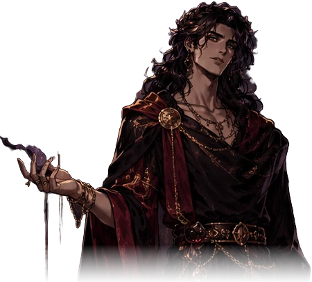
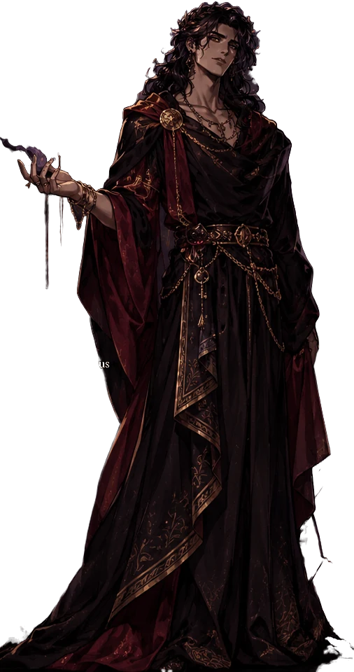

Your road to the white coat, plus the life rites that make it possible.
Every college class counts. Science classes (Bio/Chem/Phys/Math) make your science GPA. The math is done for you.
Every hour you log grows a real medicinal plant. Tap a bed for its lore and its hours.
Contract work: money that buys you time for school, shadowing, and life.
Hestia keeps the fire. Tap what you did for yourself. Honest, not perfect.
Breaks that secretly count as studying.

The values you'd live and die for. When you forget you're a firecracker, read these.
Six seeds. Two worlds. One very devoted god of the dead.